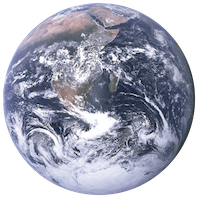
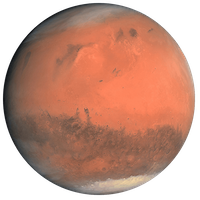

The Worlds
[TODO: add full width photo here]Establishing outposts on other worlds also might be a way to hedge the bet on humanity's survival, in case our existence on our home planet is threatened by a nuclear war, climate change, pandemics and population growth.
The late physicist Stephen Hawking believed that humanity needs to colonize another planet within the next century, if it is to avoid the threat of extinction [source: Kharpal].
Earth
Earth is the third planet from the Sun and the only astronomical object known to harbor life. According to radiometric dating and other evidence, Earth formed over 4.5 billion years ago.
- Diameter: 12,756 km
- Gravity: 9.8 m/s2
- Distance from Sun: 149.6 10x6 km
Mars
Mars is the fourth planet from the Sun and the second-smallest planet in the Solar System after Mercury.
- Diameter: 6,353 km
- Gravity: 3.7 m/s2
- Distance from Sun: 206.3 10x6 km